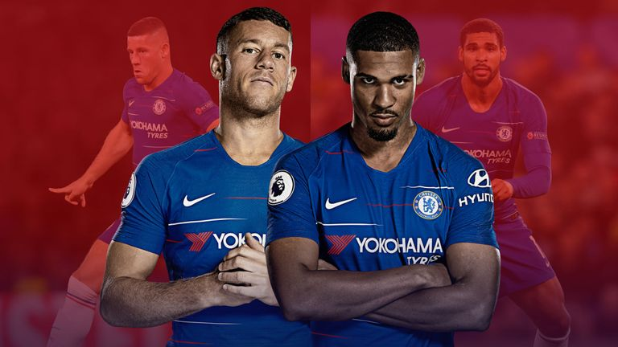

Ryan Giggs denies pressure on Wales to play Gareth Bale against Spain.
Ryan Giggs has insisted there is no pressure on Wales to play Real Madrid forward Gareth Bale against Spain
Wales will return to the 74,500-capacity Principality Stadium - the home of Welsh rugby - on October 11 for the first time since 2011, with former world and European champions Spain providing high-profile opposition.
The Football Association of Wales reportedly banked close to £1m at the China Cup in March when Bale's involvement prevented any hefty penalty clauses being applied.

The Ross Barkley and Ruben Loftus-Cheek conundrum: One or the other for Chelsea and England?
After Ross Barkley was selected ahead of Ruben Loftus-Cheek in the England squad on Thursday afternoon, it was roles reversed come Thursday evening's Europa League win over Vidi. With places a premium for club and country, the duo's battle has only just begun, writes Michael Hincks.
On Wednesday, Chelsea manager Maurizio Sarri backed the "improving" Barkley to return to Gareth Southgate's England squad. The midfielder was equally as bullish, stating his performances had warranted a recall.
Come Thursday, the 24-year-old was rewarded with a place in the 25-man squad, ending what has been an 18-month exodus from the national set-up, while you have to go back to May 2016 for the last time he actually featured for England.